Astro 最初于 2021 年 3 月发布，目前在 Github 上有 41.9k Star。
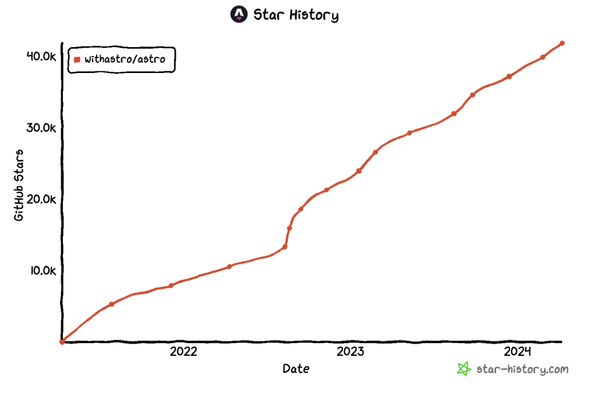
Astro 是一个集多功能于一体的 Web 框架，专为内容丰富的网站而设计，是最适合构建像博客、营销网站、电子商务网站这样以内容驱动的网站的 Web 框架。
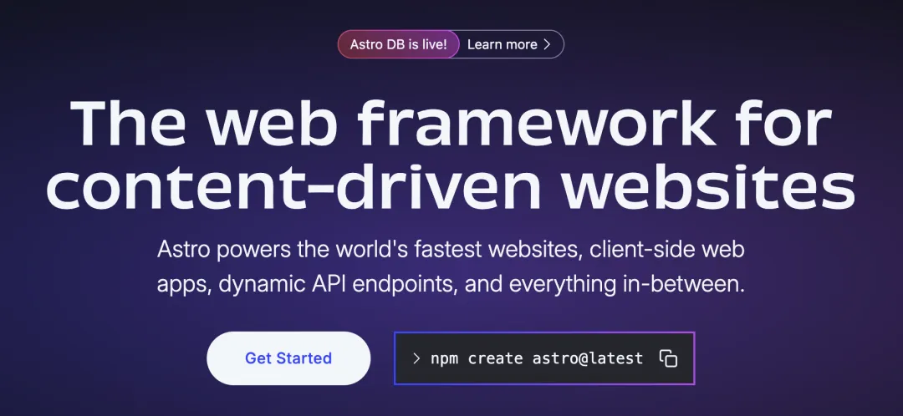
Astro 的特性如下：
Astro 独创了一种前端架构，名为“群岛”。这种架构旨在避免传统的单体 JavaScript 模式，通过自动剥离页面中所有非必需的 JavaScript，显著提升了前端性能。所谓的“岛屿”，是指页面上的每一个交互式 UI 组件。这些岛屿各自独立运行，互不干扰，一个页面上可以同时存在多个岛屿。尽管岛屿在不同的组件环境中运作，但它们之间仍然能够共享状态并相互通信，保持了高度的灵活性和交互性。这种设计使得 Astro 能够轻松支持多种 UI 框架，如 React、Preact、Svelte、Vue 和 SolidJS。由于岛屿的独立性，你甚至可以在同一个页面上混合使用多种框架，实现前所未有的前端体验。
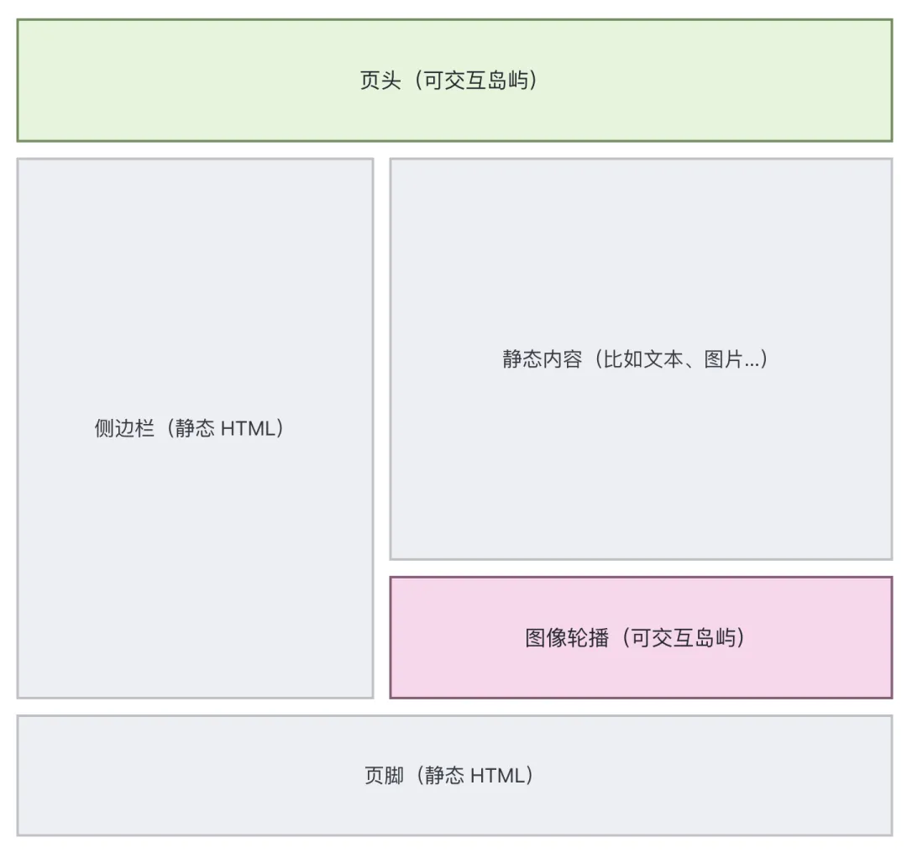
Astro 自发布之后，一直在快速的更新迭代，同时发布了一些周边产品，如：
Astro 的使用场景包括：营销网站、出版网站、文档网站、博客、个人作品集、落地页、社区网站以及电子商务网站。无论是需要展示产品、发布内容、分享知识还是促进交易，只要有内容需要快速传递给读者，Astro 都是一个理想的选择。它以其高效的性能和灵活的架构，帮助用户轻松构建出高性能、内容丰富的网站，满足各种业务需求。
Github：https://github.com/withastro/astro
Qwik 最初于 2021 年 5 月发布，目前在 Github 上有 20.1k Star。
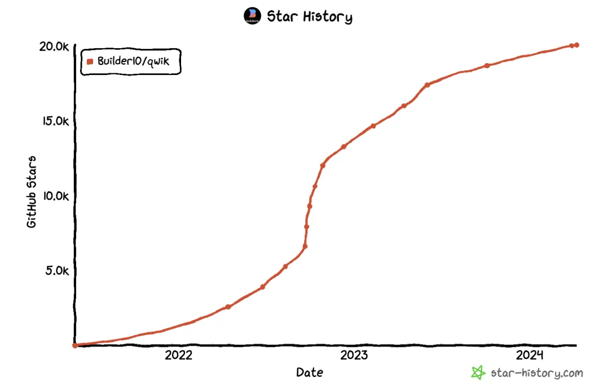
Qwik 是一个 Web 框架，其独特之处在于通过延迟执行和下载 JavaScript 以及序列化应用的执行状态来实现即时启动应用的目标。
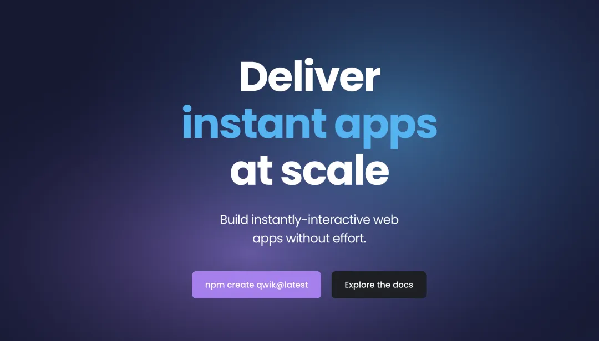
Qwik 的特点包括：
Qwik 解决了现代网站在启动时需要大量 JavaScript 代码的问题，这导致了网络带宽和启动时间上的瓶颈。Qwik 的设计目标是尽可能减少应用需要下载和执行的 JavaScript 代码量，从而实现更快的页面加载速度和更好的用户交互体验。
Qwik 适用于需要快速加载和即时交互的 Web 应用程序，尤其适用于对性能要求较高的场景，如移动应用、动态内容网站、实时交互应用等。通过 Qwik，开发者可以构建出具有出色性能和用户体验的 Web 应用，满足用户在不同设备和网络环境下的需求。
Github：https://github.com/BuilderIO/qwik
Remix 最初于 2021 年 10 月开源，目前在 Github 上有 27.2k Star。
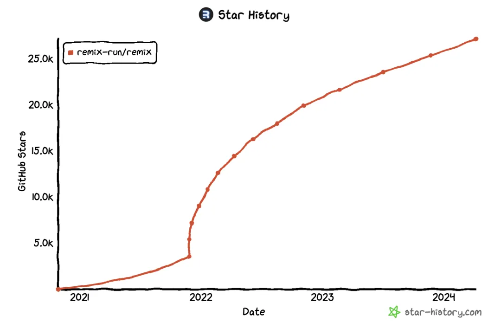
Remix 是一个面向 React 开发者的全栈框架，直接对标 Next.js，其旨在提供更好的开发体验和更高的性能。该框架由 Ryan Florence 和 Michael Jackson 创建，他们是 React Router 库的作者。Remix 最初是一个收费框架，名为 Remix Run，提供了一种新的方式来构建动态网站。Remix Run 于 2021 年 3 月首次发布，最初是商业产品，需要购买许可证才能使用。
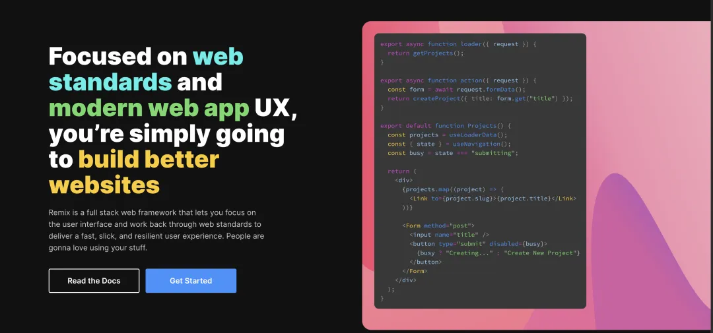
2021 年 10 月，Remix 团队宣布将 Remix Run 转变为一个开源项目，并更名为 Remix。通过开源，Remix 团队希望能够吸引更多的开发者并建立一个更加活跃的社区，从而推动框架的发展和改进。
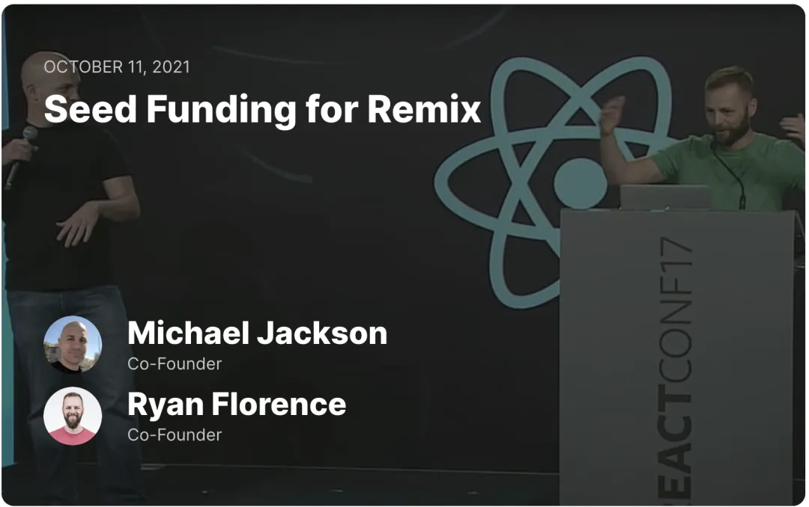
Remix 构建在 React Router 之上，通过以下以下四点实现了一种高效且灵活的全栈 Web 开发体验：
remix vite:build的命令，Remix 能够生成服务器端 HTTP 处理程序、浏览器版本和资产清单。这些生成物可直接部署至任何支持 JavaScript 的托管服务，极大地简化了部署流程。Github：https://github.com/remix-run/remix
最初于 2021 年 4 月发布，目前在 Github 上有 23.9k Star。
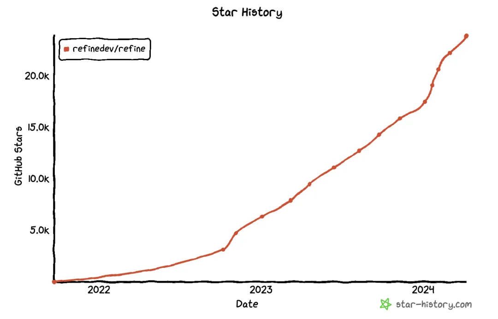
Refine 是一个针对 CRUD 密集型 Web 应用的 React 元框架。它旨在解决包括内部工具、管理面板、仪表板和 B2B 应用在内的广泛企业用例。
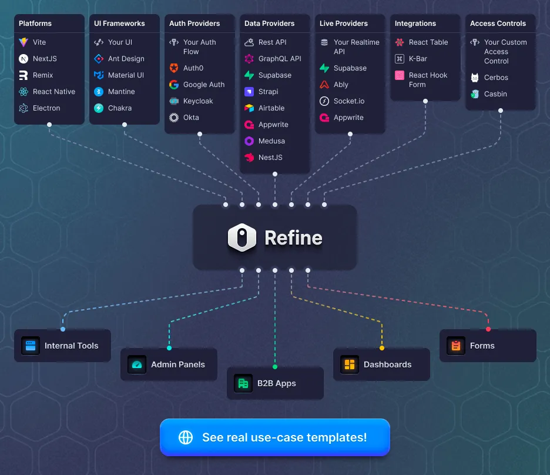
Refine 的特点如下：
Github：https://github.com/refinedev/refine
Nue 最初于 2023 年 9 月发布，目前在 Github 上有 5.7k Star。
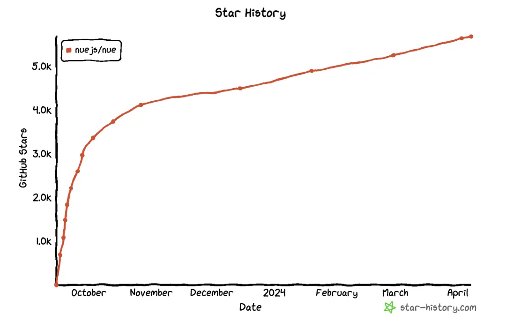
Nue.js 是一款采用内容优先开发模型的 Web 框架，它使网站内容编辑和创建更加优化，通过简单的语法和关注点分离，减少了构建同样功能的代码量，从而提高了开发效率。Nue.js 的创作者 Tero Piirainen 表示，Nue.js 是 React、Vue、Next.js、Svelte 和 Astro 的替代品。
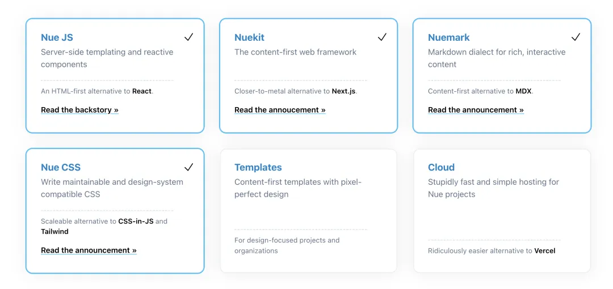
Nue.js 表现出极致的性能，通过加载更少的资源、实现客户端的即时页面切换、显著提升构建速度、提供缓存友好的分发方式以及使用更简洁的 CSS 来构建更快的网站。
Nue.js 更加贴近标准，项目比 Next.js 更简洁，减少了抽象和学习的成本，降低了出错的可能性。它实现了关注点分离，为内容创作者、UX 开发人员和 JS 开发人员提供了明确的职责划分。此外，Nue.js 坚持使用经久不衰的标准，而非短暂流行的 CSS-in-JS，确保代码经受住时间的考验。
Github：https://github.com/nuejs/nue
VanJS 最初于 2023 年 5 月发布，目前在 Github 上有 3.4k Star。
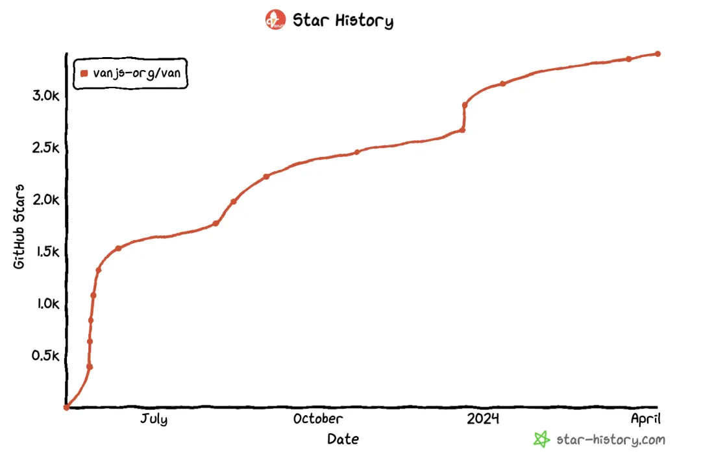
VanJS 是一个超轻量级、零依赖的响应式 UI 框架，基于纯粹的原生 JavaScript 和 DOM。它允许开发者使用几行代码在任何设备上构建有用的 UI 应用程序，无需 React/JSX 或其他复杂的配置。
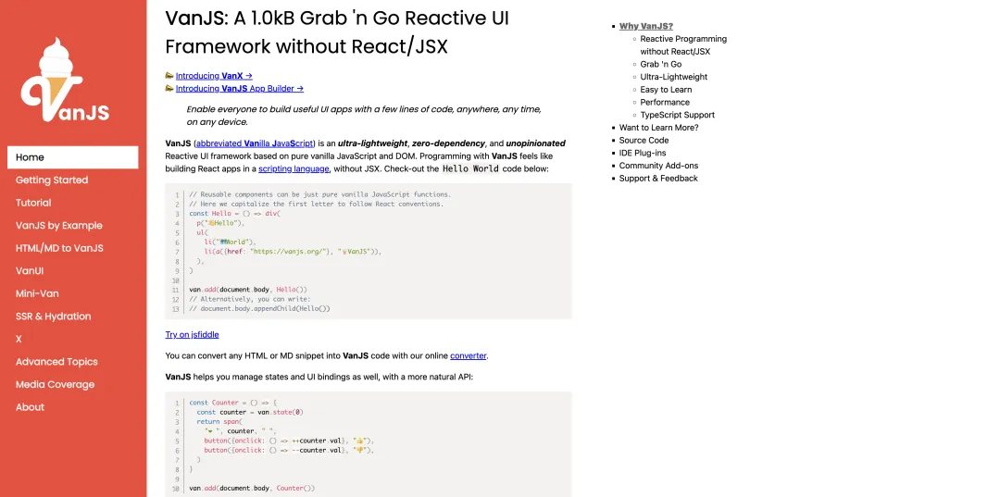
VanJS 的特点如下：
Github：https://github.com/vanjs-org/van
最初于 2023 年 6 月发布，目前在 Github 上有 3.7k Star。
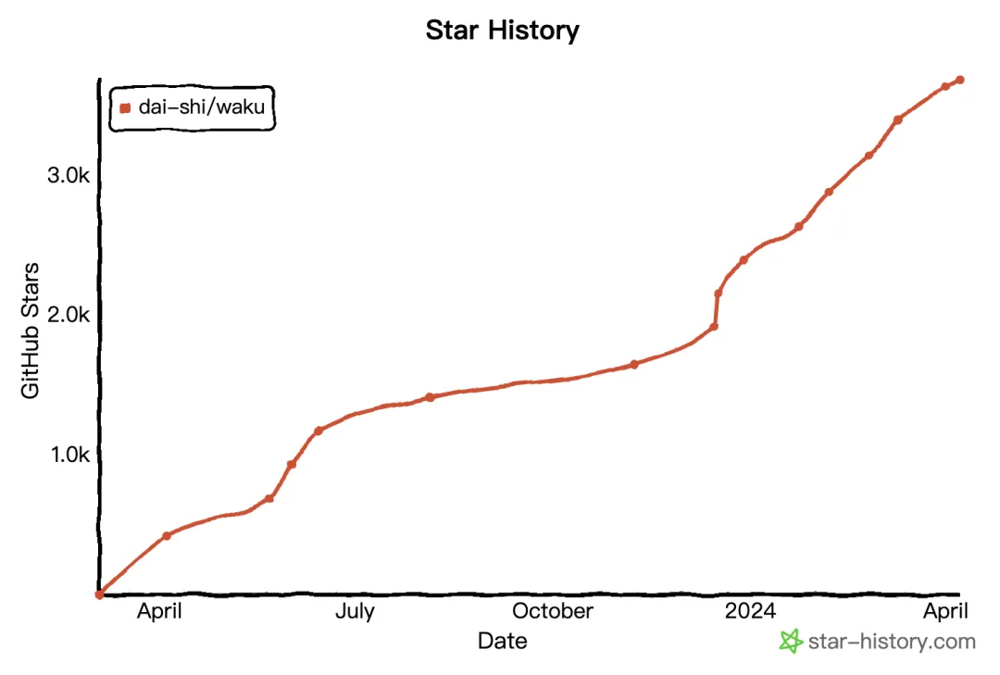
Waku 是一个轻量级的 React 框架，设计用于加速初创公司和机构开发小型到中型 React 项目的工作。它适用于构建营销网站、轻量级电商网站和 Web 应用。Waku 的目标是在现代 React 服务端组件时代带来快速的开发者体验，让 React 开发再次变得快速。需要注意的是，Waku 目前正处于快速发展阶段，一些功能可能还不完善。因此，建议用户先在非生产项目上进行尝试。